iphone-duo-transition
src/
├── main.tsx router
└── components/
├── TracingPaperSimulation.tsx #tracing-paper
│ └── tracingPaperScene.ts

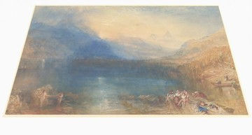
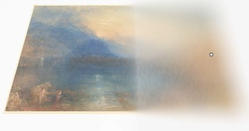
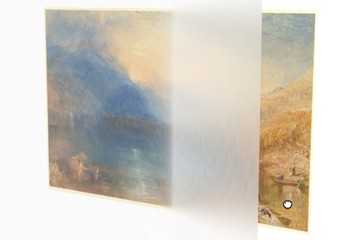
├── CoordinatedPaperOpening.tsx #iphone-duo
│ └── coordinatedDisplayScene.ts
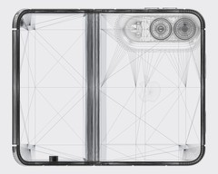
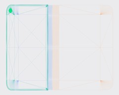
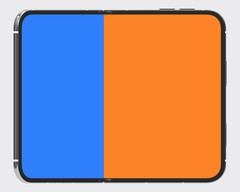
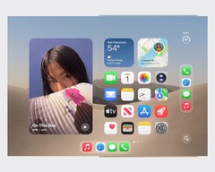
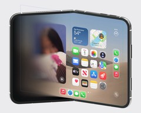
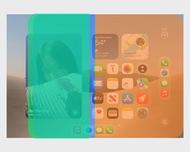
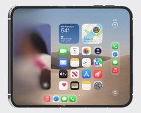
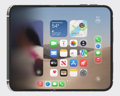
├── PhonePerceptionExperiment.tsx #perception
│ └── phonePerceptionScene.ts
│ └── renderedOpticalFlow.ts

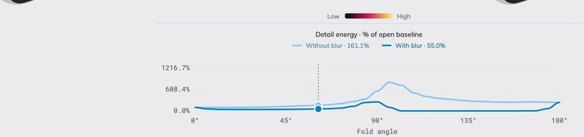

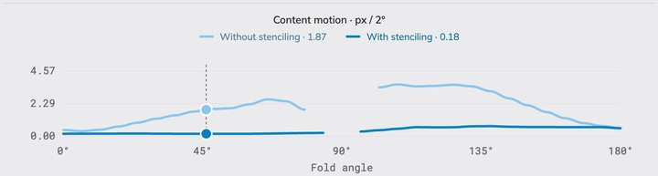
├── phoneFinish.ts shared └── labControls.css shared